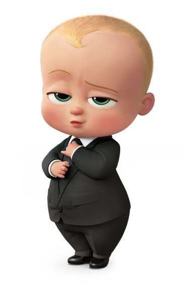

| Plantas | ||
|---|---|---|
| Inicio | Galeria | Contacto |
Los temas y estilos también ayudan a mantener su documento coordinado. Cuando haga clic en Diseño y seleccione un tema nuevo, cambiarán las imágenes, gráficos y gráficos SmartArt para que coincidan con el nuevo tema. Al aplicar los estilos, los títulos cambian para coincidir con el nuevo tema. Ahorre tiempo en Word con nuevos botones que se muestran donde se necesiten. Para cambiar la forma en que se ajusta una imagen en el documento, haga clic y aparecerá un botón de opciones de diseño junto a la imagen. Cuando trabaje en una tabla, haga clic donde desee agregar una fila o columna y, a continuación, haga clic en el signo más |  | |